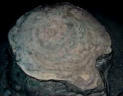

| In Deutsch |
| In Deutsch |
Stalagmite
|  |
| Image: this stalagmite was cut off. The intersection show the interior of a stalagmite, numerous concentric layers with different colours.
|
 |
| Image: The most famous stalagmite of the
|
en: stalagmite
de: Bodenzapfen (r); Stalagmit (r)
es: estalagmita (f)
fr: stalagmite (f)
hu: állócseppkő; cseppkőgyertya; sztalagmit
it: stalagmite (sf)
pt: estalagmite
ro: stalagmitá (f)
| Image: a cross section through a stalagmite, showing the internal structure. The stalagmite is about 40cm high. |
Stalagmites are dripstones pointing vertically upwards from the cave floor. They are round, somewhat conical, sometimes they get thinner to the top. Some are cylindrical and have about the same diameter from the floor to the top. Very often the top is flat. Typical is also a sort of periodic change of diameter, which is flat on top and conic downwards. This resembles the trunc of a palm tree.
Dripstones, as the name says, are formed by driping water. When the drop hits the ground, the water drop bursts into many smaller drops which are dispersed in a certain diameter. The diameter is proportional to the height of the fall. So the diameter of the stalagmite depends on the height of the fall.
On the other hand the diameter of the stalagmite also depends on the amount of water. So the periodic change of diameter is a sign of changing water supply. But the distance of 10 to 20 cm of the periodic change is too much for seasonal changes. A stalagmite normally grows 0.1 to 0.3 mm per years in moderate climate zones. This means a step of 20cm needed 2,000 years of continual growth to form.
 Palm Trunc Stalagmites.
Palm Trunc Stalagmites. Caves With The Tallest Stalagmite
Caves With The Tallest Stalagmite The Virtual Cave: Stalagmites
The Virtual Cave: Stalagmites{kind=link}
{kind=link}